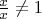
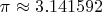

Svrst
Contents
What is svrst ?
Svrst contains customized builders for converting reStructuredText to html, text and pdf. The main feature that was added is the ability to write math equation in latex, and several improvements to get a more printable pdf.
Download
svrst is available both as a Pacman package (x86_64 only), or in source form. For source or Pacman installation, please refer to the Generic download and install instructions.
Usage
svrst2html.py
This converts a rst document to html. The usage is the same as rst2html.py . See its manual for more information.
svrst2latex.py
This converts a rst document to latex. The usage is the same as rst2latex.py. See its manual for more information.
svrst2pdf.py
This converts a rst document into a pdf file. The program takes exactly two arguments: the source RST file, and the destination PDF file. The environment variable FULL_DIR_URL can be used to give a base URL to prepend to relative links.
For example, if in the rst file there is a link to test.html, then the person reading the printed PDF will not know where the link really points to if a base URL is not specified. If FULL_DIR_URL is e.g http://svasey.org, then it will be written in the PDF, and the user will know that the link really points to http://svasey.org/test.html.
The math extension
To write math, the simplest is to do something like:
.. default-role::math
Hey this is some math: `\frac{x}{x} \ne 1`
or on its own line
`\pi \approx 3.141592`
This will render as
Hey this is some math: 
or on its own line

If you do not want to set math as a default role, you can do:
Formula on its own line
.. math::
e^{i\pi} + 1 = 0
or even
Formula follows on the same line: :math:`2 + 2 = 5`
Except for very simple cases, the formula will be compiled into an image in html documents, and the math mode will be used in the latex document, which is then compiled to pdf.
Links in PDF files
By default, rst2latex.py converts the RST links to clickable links in latex (using \href). This means that the resulting PDF is good for computer-use, but one cannot see where the links point to when the PDF is printed. Since I consider PDF a format for printing, I made the following modification: links are mapped to a footnote giving the location they point to. If the link's text is a URL, no footnote is added, however.
Limitations
svrst2latex.py reprocesses the latex file after compilation by rst2latex.py . For simplicity reasons, some corner cases are not considered when doing this, and the result is that some RST directives will not work when compiled into pdf.
Admonitions
Admonitions are known not to compile to pdf at all. If you want to use them, that will have to be for html documents only.
Links in headers
Links cannot be used in headers when compiling to pdf. If you want to use them, that will have to be for html documents only.
Links in numbered footnotes
Links in numbered footnotes will not render correctly in the pdf version (the footnote indicating the URL will be missing). This works fine with references though.
References
The math extension was inspired by a blogpost called reStructuredText extensions.